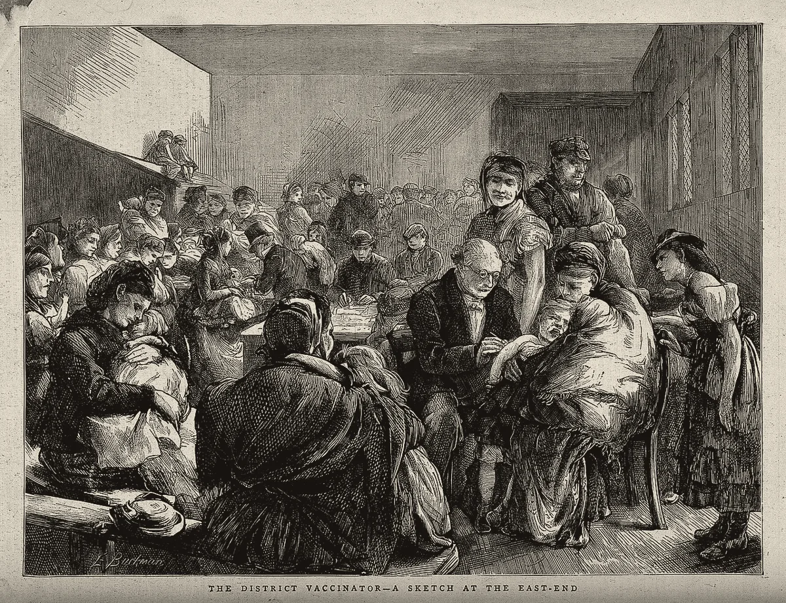

· Edición 70 · 4 min de lectura
Colombia vacuna a la mitad de las niñas contra un cáncer evitable

Colombia vacuna a la mitad de las niñas contra un cáncer evitable
En pocas palabras. ¿Se puede acabar con un cáncer? Con el de cuello uterino parece posible: casi siempre lo causa un virus común, y una dosis de vacuna a los nueve años protege. En Colombia la recibieron unas 53 de cada 100 niñas de nueve años en 2024; la OMS pide 90. Si en su casa hay alguien de 9 a 17 años, es gratis.
El dato curioso. En 1951, en el hospital Johns Hopkins de Baltimore, los médicos tomaron una muestra del tumor de cuello uterino de Henrietta Lacks, una mujer afroestadounidense. Sus células fueron las primeras humanas que siguieron multiplicándose sin parar en un laboratorio: las HeLa. Ni ella ni su familia recibieron nada a cambio. Décadas después, el alemán Harald zur Hausen encontró en ellas el virus que causa este cáncer. En 2008 ganó el Nobel.
¿Qué pasa? En 2014, en El Carmen de Bolívar, cientos de niñas llegaron al hospital con desmayos después de vacunarse contra el virus del papiloma humano (VPH), que se transmite en las relaciones sexuales. El Instituto Nacional de Salud no encontró relación con la vacuna. Muchas familias no aceptaron esa explicación, y el miedo se movió más rápido que el informe.
98 de cada 100
2012: primera dosis.
14 de cada 100
2016, después de El Carmen de Bolívar.
53 de cada 100
2024, niñas de nueve años. Se mide distinto.
Fuente: Simas y otros, Human Vaccines & Immunotherapeutics (2019); Universidad de los Andes, Observatorio de Salud Pública
¿Y a mí qué? En Colombia mueren por este cáncer entre 2.000 y 2.400 mujeres al año, según el Instituto Nacional de Cancerología y la agencia del cáncer de la OMS: unas seis cada día.
Lo que cambia en 10 a 50 años: el cáncer aparece de 15 a 20 años después del contagio, según la OMS. Si nada cambia, las muertes en el mundo pasarían de 369.000 en 2023 a 522.000 en 2050, según un estudio publicado este mes en Nature Medicine.
¿Por qué pasa? La vacuna funciona como una sombrilla: sirve si se abre antes de que llueva. Por eso se pone a los nueve años: casi todas las personas con vida sexual se encuentran el virus alguna vez, según la OMS.
- El daño llega tarde. Quien no vacuna hoy no ve el costo: llega dos décadas después.
- La confianza se cae rápido y vuelve despacio. Once años después de 2014, el país sigue lejos de lo que logró en 2012.
¿Alguien lo ha resuelto? Sí. En Escocia, ninguna de las mujeres vacunadas a los 12 o 13 años tuvo cáncer invasivo de cuello uterino, según un estudio de 2024 con unas 447.000 mujeres. En Inglaterra, entre 2020 y 2024 no murió de este cáncer ninguna mujer de 20 a 24 años; sin la vacuna se esperaban unas 23, según The Lancet.
Y basta una dosis: más de 90 países la usaban en marzo de 2026, según PATH, una organización de salud global. Colombia la adoptó en 2023 para las niñas y en 2024 para los niños de 9 a 17 años.
Pero ojo.
- Pocos casos. Lo de Escocia e Inglaterra son estudios de observación: ese cero tiene margen de error.
- No cubre todo. Las vacunas protegen contra los tipos que causan unos 76 de cada 100 de estos cánceres, según la OMS. Las pruebas en las mujeres adultas siguen haciendo falta.
(Las cifras de cobertura no coinciden entre fuentes; no verificado.) Otras cuentas de 2025 dan mucho menos que 48.
Qué hacer con esto
Para ir pensando. Si hay en la casa niñas o niños de 9 a 17 años, revisar el carné: una dosis basta.
Cómo prepararse. La vacuna no reemplaza las pruebas: citología cada tres años de los 25 a los 29, y de 30 a 65, una prueba que busca el virus cada cinco, según el Ministerio de Salud.
Ojo con el cuento. «Se enfermó después de vacunarse; fue la vacuna.» Que algo pase después no prueba que lo causó: hay que preguntar qué encontraron quienes lo estudiaron.
Qué podríamos exigir. Una cifra oficial de vacunación, pública y al día; hoy circulan varias.
Dos lecturas
Las dos posturas sobre el tema, en su mejor versión
Vacunar en el colegio, sin esperar. La dosis es una sola, segura y gratuita, y el costo de no ponerla lo pagan mujeres dentro de 30 años. La jornada escolar debería ser lo normal, con las familias informadas.
Primero, la confianza de las familias. Lo que pasó en 2014 enseñó que empujar sin escuchar sale caro. Conversar con padres, maestros y médicos del barrio toma más tiempo, pero sostiene la vacunación.
Quién decide y cuándo
Quién decide. El Ministerio de Salud fija la meta; las secretarías de salud y los colegios vacunan; cada familia decide.
Cuándo. Sin fecha. La meta de la OMS para 2030: 90 de cada 100 niñas vacunadas antes de los 15 años.
Cómo participar. Vacunar: es gratis todo el año en los puntos públicos, según la Liga Colombiana contra el Cáncer.
La paradoja del día
Lo más absurdo de la edición, en dos líneas
En 2012, con un esquema de varias dosis, Colombia vacunó a casi todas sus niñas. Hoy basta una, es gratis, y el país sigue lejos de aquella cifra.
Para conversar
La pregunta. Una dosis a los nueve años puede evitar un cáncer a los 40. ¿A quién le toca insistir: a la familia, al colegio o al sistema de salud?
Para leer más
Libros para seguir con el tema
La vida inmortal de Henrietta Lacks, de Rebecca Skloot (en español, Temas de Hoy, 2011; reeditado por el grupo Planeta en 2024). La historia de la mujer detrás de las células HeLa, de su familia y de la ciencia que se hizo con ellas, sin su permiso ni el de los suyos.
¿Le interesa ver las fuentes?
Todos los documentos y datos que usamos
34 fuentes: 8 académicas, 9 oficiales, 1 de datos, 6 de organizaciones, 4 de prensa, 6 de referencia.
- Académica GBD 2023 Cervical Cancer Collaborators, Nature Medicine (noviembre de 2026). Global, regional and national burden of cervical cancer in 1990–2023 with forecasts to 2050: a Global Burden of Disease study
- Organización Nature Research, comunicado (Nature Asia). Health: Cervical cancer cases and deaths forecast to rise (Nature Medicine)
- Prensa Scimex. Cervical cancer cases and deaths forecast to rise
- Académica Simas, Munoz, Arregoces y Larson, Human Vaccines & Immunotherapeutics (2019), en PMC. HPV vaccine confidence and cases of mass psychogenic illness following immunization in Carmen de Bolivar, Colombia
- Académica Revista Gerencia y Políticas de Salud, Pontificia Universidad Javeriana (2022). Revisión narrativa del caso de la vacuna contra el VPH en El Carmen de Bolívar, Colombia (2014-2021)
- Académica Henríquez-Mendoza, Revista de Salud Pública (2020), en SciELO. El «evento de El Carmen de Bolívar» en la vacunación contra VPH en Colombia. ¿Causa o desenlace?
- Académica Universidad Tecnológica de Bolívar (repositorio institucional). Estudio sobre el caso de la vacuna contra el VPH en El Carmen de Bolívar
- Oficial Alcaldía de Bogotá, Secretaría Distrital de Salud (octubre de 2026). Bogotá refuerza la vacunación en colegios contra el VPH y llama a completar las dosis pendientes este 16 y 17 de octubre
- Prensa Blu Radio. En Colombia hay una baja cobertura de vacunación contra el VPH (cifras del Ministerio de Salud y Acemi)
- Oficial Gobernación del Huila, Observatorio de Salud. Cobertura de vacunación por VPH en niños y niñas de 9 años, 2025
- Académica Universidad de los Andes, Observatorio de Salud Pública (mayo de 2026). Boletín del Observatorio de Salud Pública, mayo de 2026
- Datos Agencia Internacional para la Investigación del Cáncer (IARC), Globocan 2022. Colombia: fact sheet
- Oficial Instituto Nacional de Cancerología. Cáncer de cuello uterino
- Prensa Infobae (1 de abril de 2026). Cáncer de cuello uterino en Colombia: experto dice cómo prevenir la enfermedad que mata a 2.400 mujeres cada año
- Oficial Organización Mundial de la Salud. Cervical cancer (nota descriptiva)
- Oficial Organización Mundial de la Salud. World Cervical Cancer Elimination Day 2026
- Oficial Organización Mundial de la Salud (17 de noviembre de 2025). World marks cervical cancer elimination day as countries accelerate action
- Académica Palmer y otros, Journal of the National Cancer Institute (2024), en la Universidad de Edimburgo. Invasive cervical cancer incidence following bivalent human papillomavirus vaccination: a population-based observational study of age at immunization, dose, and deprivation
- Organización Gavi, la Alianza para las Vacunas (junio de 2026). HPV vaccine means young women are no longer dying from cervical cancer in England, study finds
- Organización Cancer Research UK (18 de junio de 2026). New data shows the HPV vaccine is saving lives from cervical cancer
- Organización PATH. Evidence to inform decision-making on single-dose HPV vaccination policy
- Oficial Ministerio de Salud y Protección Social. Lineamiento para el fortalecimiento de las acciones para el control del cáncer de cuello uterino (plan de choque)
- Oficial Alcaldía de Santiago de Cali. Se amplió la edad para vacunación contra VPH: ahora los niños hasta 17 años pueden acceder al biológico de forma gratuita
- Organización Liga Colombiana contra el Cáncer. VPH
- Oficial Ministerio de Salud y Protección Social. Cáncer de cuello uterino (detección temprana)
- Académica Johns Hopkins Bloomberg School of Public Health, IVAC (2026). Latest global immunization coverage estimates illustrate gaps in vaccine access
- Referencia Arizona State University, The Embryo Project Encyclopedia. Henrietta Lacks (1920–1951)
- Referencia Arizona State University, The Embryo Project Encyclopedia. HeLa Cell Line
- Referencia Fundación Nobel. Harald zur Hausen: autobiografía
- Referencia Fundación Nobel. Harald zur Hausen: Premio Nobel de Fisiología o Medicina 2008
- Referencia Planeta de Libros. La vida inmortal de Henrietta Lacks, de Rebecca Skloot (ficha de prensa)
- Referencia Quelibroleo. La vida inmortal de Henrietta Lacks (Temas de Hoy, 2011)
- Organización Earth Negotiations Bulletin (IISD). Conferencia de las Naciones Unidas sobre el Cambio Climático de Antalya (COP31)
- Prensa Channels Television, con AFP (12 de noviembre de 2026). Jab By Jab, House By House, Nigeria Slowly Rolls Out Malaria Vaccine
Glosario
Las palabras técnicas, explicadas
- VPH (virus del papiloma humano): virus muy común que se transmite en las relaciones sexuales. Casi siempre el cuerpo lo elimina solo; cuando se queda, algunos tipos pueden causar cáncer.
- Cuello uterino: la parte baja del útero, que lo conecta con la vagina.
- Citología: examen que toma unas células del cuello uterino para ver si hay cambios antes de que sean cáncer.
- Prueba de ADN del VPH: examen que busca el virus en esas células.
- Cobertura de vacunación: de cada 100 personas que deberían tener la vacuna, cuántas la tienen.
- Reacción psicogénica masiva: síntomas reales que se extienden en un grupo por la angustia compartida, sin una causa física que los explique.
- Eliminación (de un cáncer, según la OMS): menos de 4 casos nuevos al año por cada 100.000 mujeres.
Nota metodológica
Cómo se hizo esta edición y qué no pudimos verificar
El horizonte. ¿Cambia el rumbo de cómo vive la gente, en Colombia o en el mundo, dentro de 10 a 50 años? Sí. Este cáncer aparece de 15 a 20 años después del contagio, así que la vacunación de hoy decide cuántas mujeres mueren entre 2040 y 2070. La proyección institucional es la del estudio de carga global de la enfermedad publicado en Nature Medicine a comienzos de noviembre: si siguen las tendencias, las muertes en el mundo subirían 39% a 2050, y ninguna gran región del mundo bajaría del umbral de eliminación de la OMS. La serie larga de Colombia es la de Simas y otros (2012 a 2016) y las cifras oficiales de 2024 y 2025. Puede ser el primer cáncer que la humanidad elimine; la OMS lo plantea así desde 2020.
El filtro. Entra por la puerta del nudo y cumple las cuatro condiciones: persiste (la vacunación cayó en 2014 y no ha vuelto a su nivel en once años); tiene un mecanismo (el daño llega dos décadas después, así que nadie paga hoy el costo de no vacunar, y la confianza perdida tarda en volver); alguien lo puede cambiar (el Ministerio de Salud, las secretarías, los colegios y cada familia); y causa un daño comprobable (entre 2.000 y 2.400 muertes al año en Colombia). Es un nudo estructural: si no se desata, sigue dañando durante décadas. Es lunes: abre la semana, así que la mezcla no pesa todavía. La puerta de entrada es el estudio de Nature Medicine y el Día Mundial de mañana. La vacunación contra el VPH estuvo en «Lo que descartamos» del 26 de octubre al 4 de noviembre por falta de un hecho que la reactivara.
Puntaje. De 1 a 3 en cada criterio; peso en la vida y horizonte valen doble (máximo 24). Solo entra un tema con horizonte 3.
| Tema | Puerta | ¿Cambia el rumbo en 10 a 50 años? | Alcance | Peso | Horizonte | Cercanía | Margen | Mirada | Total | Resultado |
|---|---|---|---|---|---|---|---|---|---|---|
| Vacunación contra el VPH, a la mitad de las niñas | nudo | Sí: decide cuántas mujeres mueren de este cáncer entre 2040 y 2070 | 3 | 3 | 3 | 3 | 3 | 2 | 23 | Elegido (edición 70) |
| Vacuna contra la malaria en Nigeria (mundo) | avance | Sí: la malaria podría dejar de matar niños en una generación | 3 | 3 | 3 | 1 | 1 | 2 | 19 | Sin datos nuevos |
| Presupuesto global de carbono 2026 (mundo) | fondo | Sí: cuánto le queda al mundo para no pasar de 1,5 °C | 3 | 3 | 3 | 2 | 1 | 1 | 19 | Clima, contado el 9 de noviembre |
| Baterías de sodio frente a las de litio (mundo) | fondo | Sí: guardar energía sin depender del litio | 3 | 2 | 3 | 2 | 1 | 2 | 18 | Pegada a la energía solar |
| Segunda semana de la COP31 (mundo) | fondo | Sí, si hay decisiones | 3 | 2 | 3 | 2 | 1 | 1 | 17 | Cierra el 20 de noviembre |
| Salario mínimo 2027 | ninguna | No: es una decisión de un año | 3 | 2 | 1 | 3 | 3 | 1 | 15 | No pasa el horizonte |
En el tema elegido, el margen vale 3 porque hay algo concreto que hacer hoy (vacunar, gratis) y la mirada vale 2 porque los medios lo cuentan en las jornadas, pero casi nadie conecta 2014, la dosis única y los resultados de otros países. Ningún otro tema llega a 19 con un hecho propio y sin repetir lo reciente, así que hoy hay una sola edición.
Hicimos unas 35 búsquedas en español e inglés. No pudimos abrir los documentos completos, tampoco el estudio de Nature Medicine; trabajamos con resúmenes, comunicados y resultados de búsqueda. De 34 fuentes, 30 no son de prensa.
Quedó sin verificar o con límites:
- La cobertura. Usamos el dato anual más sólido: 53 de cada 100 (52,6%) niñas de nueve años con la primera dosis en 2024, según la Universidad de los Andes; el plan del Ministerio de Salud da 53. Para 2025 solo hay cortes de mitad de año (entre 19 y 23 de cada 100), que no se comparan con un año completo. Una cifra de 47,9% para el cierre de 2025, citada por la Alcaldía de Bogotá y Acemi, no la pudimos confirmar como nacional. No encontramos una cifra oficial consolidada del Ministerio.
- 2012 y 2016. El 98 y el 14 de cada 100 (primera dosis, niñas en edad de vacunarse) son de Simas y otros (2019); otras fuentes dan 95 y 14, o 78,5 y 20,4 en 2014, con otras bases.
- El Carmen de Bolívar. El estudio del Instituto Nacional de Salud revisó 517 casos según Simas y otros, y 629 según otra fuente; sus resultados se presentaron en enero de 2015 y, según la Universidad Tecnológica de Bolívar, no se publicaron en una revista. Los desmayos los tomamos de los resúmenes de prensa y de las revisiones. Una revisión de 2020 en la Revista de Salud Pública pregunta si El Carmen de Bolívar fue la causa de la caída o el desenlace de problemas que el programa ya traía; no le atribuimos todo el desplome.
- Las muertes en Colombia. Globocan 2022 estima unas 2.435 al año (4.570 casos nuevos); el Instituto Nacional de Cancerología da entre 2.000 y 2.200. Por eso decimos «entre 2.000 y 2.400».
- La proyección mundial. La de Nature Medicine supone que todo sigue igual: no incluye el efecto de nuevas campañas de vacunación.
- Escocia e Inglaterra. Son estudios de observación. En Escocia, las cifras del grupo estudiado varían entre 447.845 y 447.955 mujeres según la fuente. Lo de Inglaterra lo tomamos de Gavi y Cancer Research UK, que resumen el artículo de The Lancet.
- La dosis única. Que más de 90 países la usaban en marzo de 2026 es de PATH; otras cuentas dan 89 en enero de 2026. Las fechas del cambio en Colombia (niñas en 2023, niños de 9 a 17 en 2024) varían algunos meses entre fuentes.
- Los 76 de cada 100. La nota de la OMS lo atribuye a los tipos 16 y 18 del virus; la vacuna de nueve tipos cubre más.
El grabado es de Edwin Buckman, de 1871, y muestra a un vacunador de distrito en el East End de Londres durante la vacunación contra la viruela. Lo tomamos de Wikimedia Commons, de la colección Wellcome.
El libro: no está en el catálogo de Santo & Seña (lo buscamos por título y por autora), así que va sin enlace. La primera edición en español (Temas de Hoy, 2011) la tomamos de un catálogo de libros; la reedición de 2024, de la ficha de prensa de Planeta.